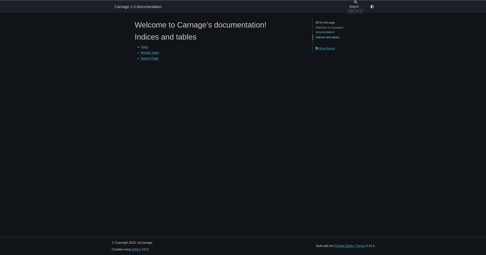

Setting up a simple blog using sphinx and ablog using a SquareSpace domain, Nginx & DigitalOcean droplet#
Buying a domain on squarespace and droplet on Digital Ocean:#
Buy a domain on squarespace.
Create an Ubuntu droplet on Digital Ocean.
Installing Anaconda and building the website using sphinx and ablog:#
Once you create the droplet above, ssh into it as root, create a separate user if you want and install anaconda.
Once you install the conda environment, install the following python libraries via pip:
pip install sphinx ablog pydata_sphinx_theme sphinx_panels
Sphinx: A documentation engine written and used by the Python community.
ablog: A Sphinx extension that converts any documentation or personal website into a blog.
pydata_sphinx_theme: A simple, Bootstrap-based Sphinx theme made by the PyData community.
sphinx_panels: A Sphinx extension for creating panels in a grid layout or as drop-downs.
Create a source directory where all the configuration files will be placed.
Run the following command in the terminal and answer the follow-ups as shown in the example
$ sphinx-quickstart Welcome to the Sphinx 5.0.2 quickstart utility. Please enter values for the following settings (just press Enter to accept a default value, if one is given in brackets). Selected root path: . You have two options for placing the build directory for Sphinx output. Either, you use a directory "_build" within the root path, or you separate "source" and "build" directories within the root path. > Separate source and build directories (y/n) [n]: The project name will occur in several places in the built documentation. > Project name: Carnage > Author name(s): 0xCarnage > Project release []: 1.0 If the documents are to be written in a language other than English, you can select a language here by its language code. Sphinx will then translate text that it generates into that language. For a list of supported codes, see https://www.sphinx-doc.org/en/master/usage/configuration.html#confval-language. > Project language [en]: en Creating file /home/carnage/sphinxblog/conf.py. Creating file /home/carnage/sphinxblog/index.rst. Creating file /home/carnage/sphinxblog/Makefile. Creating file /home/carnage/sphinxblog/make.bat.
The directory would look something like this:
_build/
_static/
_templates/
conf.py
make.bat
index.rst
Makefile
Open up conf.py and update the extensions & html_theme section as follows:
extensions = [ "ablog", "sphinx.ext.intersphinx", "sphinx_panels", ] html_theme = "pydata_sphinx_theme"
Run ablog build to build the static pages. A directory called _websites will be created which will contain all the required htm, css and js files. The directory would look something like this at this stage:
_build/
_static/
_templates/
_website/
conf.py
make.bat
index.rst
Makefile
Setting up ngnix#
Install nginx using the following command:
sudo apt install nginx
The default directory for serving webpages is /var/www/html/. So we are going to move the entire _websites directory we created above to /var/www/html/.
Open up the nginx conf using the command sudo nano /etc/nginx/sites-available/default and add /var/www/html/_website/ to the root section of the file in server block. It should look something like this:
## # You should look at the following URL's in order to grasp a solid understanding # of Nginx configuration files in order to fully unleash the power of Nginx. # https://www.nginx.com/resources/wiki/start/ # https://www.nginx.com/resources/wiki/start/topics/tutorials/config_pitfalls/ # https://wiki.debian.org/Nginx/DirectoryStructure # # In most cases, administrators will remove this file from sites-enabled/ and # leave it as reference inside of sites-available where it will continue to be # updated by the nginx packaging team. # # This file will automatically load configuration files provided by other # applications, such as Drupal or Wordpress. These applications will be made # available underneath a path with that package name, such as /drupal8. # # Please see /usr/share/doc/nginx-doc/examples/ for more detailed examples. ## # Default server configuration # server { # SSL configuration # # listen 443 ssl default_server; # listen [::]:443 ssl default_server; # # Note: You should disable gzip for SSL traffic. # See: https://bugs.debian.org/773332 # # Read up on ssl_ciphers to ensure a secure configuration. # See: https://bugs.debian.org/765782 # # Self signed certs generated by the ssl-cert package # Don't use them in a production server! # # include snippets/snakeoil.conf; root /var/www/html/_website/; ... }
At this point if you hit up the droplet’s IP address on the browser search bar. You’d see a page similar to this:

Now, we’ll be looking at how do we connect the domain bought on squarespace with the DO droplet’s IP address.
Connecting the Squarespace domain with DO droplet’s IP#
TODO